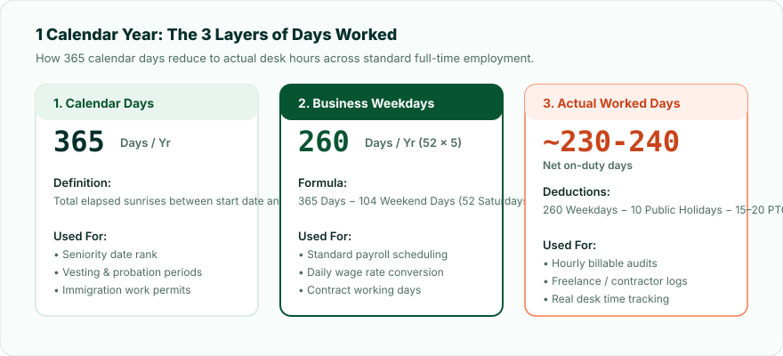
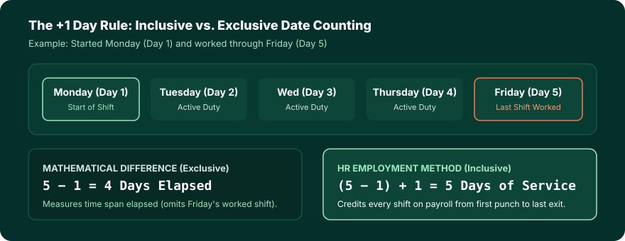

Key Takeaways
- The Inclusive "+1 Day" Rule: Simple calendar subtraction (End Date − Start Date) omits your final shift. Corporate HR tenure calculations use the inclusive formula: (End Date − Start Date) + 1.
- Calendar Days vs Business Days: 1 full year equals 365 calendar days (366 in leap years), exactly 260 business weekdays, and ~230–235 net worked desk days after public holidays and PTO.
- Leap Year Precision: Passing through February 29 adds an extra day of credited service that flat year multipliers (Years × 365) miss.
- High-Stakes Application: Severance thresholds, probation reviews, PTO accrual rates, and immigration work visas frequently audit exact day counts.
Why Total Days of Service Is a Critical Employment Metric
Most professionals describe their tenure in broad rounded milestones: "I've been with the team for three years" or "I just hit my 18-month mark." While month- and year-based descriptions work well for resume headers and conversational summaries, enterprise HR systems, payroll software, labor statutes, and pension trustees operate on exact day-count arithmetic.
Calculating your exact elapsed days on payroll is essential across multiple high-stakes situations:
- Probationary Period Sign-Off: Employment agreements frequently establish a strict 90-day, 120-day, or 180-day probation window. Crossing this threshold by even a single day can alter your statutory termination protections or trigger automatic permanent status.
- Paid Time Off (PTO) Daily Accrual: If your employer calculates PTO accrual per pay period or per calendar day worked (such as 0.0577 hours per hour or 1.25 days per month), exact day counts prevent uncredited vacation balances upon departure.
- Severance Pay & Statutory Notice: In many jurisdictions (such as the UK, Canada, Australia, and parts of the EU), statutory notice periods and severance formulas step up upon completing exact day milestones (e.g. 730 days for 2 full years of continuous service).
- 401(k) and Stock Option Vesting: Graded vesting schedules often require 1,000 hours or a minimum of 365 continuous days of service per vesting year to award employer matching equity.
- Work Visas and Immigration Status: Immigration authorities calculating permanent residency qualification (such as Canadian Express Entry or UK Indefinite Leave to Remain) evaluate exact days of physical employment in-country.
Calendar Days vs. Working Days: The 3 Layers of Employment Time
When you ask "How many days have I worked?", the answer depends entirely on whether you are measuring calendar span, scheduled business days, or net physical desk time.

1. Total Calendar Days (Elapsed Service Span)
This is the continuous chronological count of every 24-hour day that has elapsed between your hire date and reference date, including Saturdays, Sundays, and public holidays. This is the legal standard used for seniority ranking, retirement vesting, and insurance benefit eligibility.
2. Business / Working Days (Weekdays)
For standard 40-hour full-time roles, employees typically work Monday through Friday. A non-leap year contains 52 weeks plus 1 day. That equals exactly 260 business weekdays (52 weeks × 5 days) and 104 weekend days. In leap years, there may be 261 or 262 weekdays depending on which day of the week January 1 lands.
3. Net Actual Worked Days
Net worked days deducts both weekends and non-working paid days (statutory public holidays, personal PTO, and sick leave) from the calendar total:
Net Workdays Formula
Net Worked Days = 260 Weekdays - (10 Public Holidays + 15-20 Vacation/Sick Days) ≈ 230 to 235 Days/Year
The Inclusive "+1 Day" Rule: Why Standard Subtraction Fails
The most frequent error in employment tenure calculations is simple mathematical subtraction:
Date Difference = End Date − Start Date (INCORRECT for HR Service Records)
Pure date subtraction measures the elapsed interval between two timestamps at midnight (00:00:00). If you start work on Monday morning and finish your final shift on Friday afternoon, subtracting Monday (Day 1) from Friday (Day 5) yields 5 − 1 = 4 days. However, you were physically on duty for 5 distinct shifts: Monday, Tuesday, Wednesday, Thursday, and Friday.

To capture full payroll credit for both your onboarding date and your exit date, HR systems apply inclusive counting:
HR Inclusive Days of Service Formula
Total Days of Service = (End Date - Start Date) + 1
Note: If you resigned and your last day of work was September 24, both your first punch-in and your final departure are recognized.
How Leap Years Shift Your Employment Service Record
The Gregorian calendar adds February 29 once every four years (years divisible by 4, excluding century years not divisible by 400). When calculating long-term days of service, leap days introduce a subtle but critical shift:
- 1 Non-Leap Calendar Year: 365 days
- 1 Leap Calendar Year: 366 days (e.g. 2020, 2024, 2028, 2032)
- 4 Consecutive Years containing 1 Leap Year: 365 × 3 + 366 = 1,461 days (Average of 365.25 days/year)
If an employee worked from March 1, 2023 to March 1, 2024, their total inclusive days worked equals 367 days because February 29, 2024 falls directly inside their service window. A simplistic formula multiplying 1 year × 365 would undercount their service by 1 full day.
Tenure Milestone Reference Table: Days, Weeks, and Business Days
Use this reference table to map common employment anniversaries to total calendar days and expected full-time business days:
| Employment Milestone | Standard Calendar Days | Average Business Weekdays | Estimated Net Worked Days | Typical HR Significance |
|---|---|---|---|---|
| 90 Days | 90 Days (~3 Mos) | ~64 Days | ~60 Days | Standard probationary review |
| 180 Days | 180 Days (~6 Mos) | ~128 Days | ~120 Days | Extended probation / health insurance vesting |
| 1 Year | 365 Days (366 leap) | 260 Days | ~235 Days | Annual review, 401(k) match eligibility |
| 2 Years | 730–731 Days | 520–522 Days | ~470 Days | Statutory severance step-up (UK / EU) |
| 3 Years | 1,095–1,096 Days | 780–783 Days | ~705 Days | Graded equity vesting milestone (e.g. 60–75%) |
| 5 Years | 1,826 Days | 1,304 Days | ~1,175 Days | Full 100% cliff vesting, service award |
| 10 Years | 3,652–3,653 Days | 2,608 Days | ~2,350 Days | Decade tenure milestone, enhanced PTO bracket |
How to Calculate Total Days Worked in Spreadsheets
If you are building an HR audit spreadsheet or tracking contract hours in Microsoft Excel or Google Sheets, here are the exact formulas to use:
1. Total Calendar Days (Inclusive)
Assuming Start Date is in cell A2 and End Date is in cell B2:
Excel & Google Sheets Formula
=(B2 - A2) + 1
Or using DATEDIF: =DATEDIF(A2, B2, "d") + 1
2. Business Days Excluding Weekends and Public Holidays
To calculate exact workdays between two dates while excluding custom holiday calendars:
NETWORKDAYS Formula
=NETWORKDAYS(A2, B2, Holidays!$A$2:$A$15)
Where Holidays!$A$2:$A$15 contains your organization's list of paid observed holidays.
Common Pitfalls in Service Day Calculations
- The Midnight Boundary Trap: Most computerized databases store dates as UTC timestamps. If your start date is recorded as
2024-01-15T00:00:00Zand your end date is2024-01-15T23:59:59Z, pure integer subtraction results in 0, even though you worked a full 8-hour shift. - Unpaid Leave vs Active Service: Extended leaves of absence (such as unpaid sabbaticals or furloughs) may suspend your credited service days while keeping your seniority hiring date intact. Always confirm whether your organization counts active days on payroll or elapsed calendar span.
- Rehiring Gaps: If you left an employer and were rehired 6 months later, your total days of service is the sum of both active segments, not the total days from your original hire date.
Frequently Asked Questions
=DATEDIF(A1, B1, "d") + 1 or simply =(B1 - A1) + 1. For business days excluding weekends and public holidays, use the formula =NETWORKDAYS(A1, B1, Holidays_Range).